품질경영기사 (2011-06-12 기출문제)
1과목: 실험계획법
1. 직교배열표의 특징에 관한 설명으로 옳지 않은 것은?
- 변동의 계산이 용이하다.
- 다른 실험배치법과 비교해 볼 때 실험횟수는 변하지 않는다.
- 실험의 데이터로부터 요인변동의 계산이 용이하고, 또한 분산분석표의 작성이 수월하다.
- 기계적인 조작으로 이론을 잘 모르고도 일부실시법, 분할법, 교락법 등의 배치를 쉽게 할 수 있다.
(정답률: 63%)

2. 변량인자에 대한 설명으로 옳지 않은 것은?
- 주효과의 기댓값은 0이다.
- 주효과는 고정된 상수이다.
- 수준이 기술적인 의미를 갖지 못한다.
- 주효과들의 합은 일반적으로 0이 아니다.
(정답률: 50%)
3. 표와 같은 난괴법 데이터에서 오차항의 자유도는 얼마인가? (단, A는 모수인자, B는 블록인자이다.)
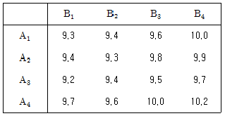
- 4
- 9
- 15
- 16
(정답률: 75%)
4. 라틴방격법에 대한 설명 내용으로 틀린 것은?
- 3원배치 실험보다 적은 실험횟수로 실험가능하다.
- 인자 간의 교호작을 검출할 수 없다.
- 적은 실험횟수로 주효과에 대한 정보를 간편히 얻을 수 있다.
- 2×2라틴 방격에서 가능한 배치방법은 2가지이고 3×3라틴 방격법의 가능한 배열방법의 수는 3 가지이다.
(정답률: 71%)
5. 인자 A는 4수준, 인자 B는 2수준, 인자 C는 2수준의 지분실험을 실시하여 ST=3.01, SA=1.895, SAB=2.641, SABC=2.982임을 알았다면, SB(A)의 값은 약 얼마인가? (단, A, B, C는 모두 변량인자이다.)
- 0.369
- 0.746
- 1.024
- 4.536
(정답률: 62%)
6. 분할법에 관한 설명으로 옳지 않은 것은?
- 오차가 2개 이상 나타난다.
- 여러 개의 인자 중에서 랜덤화가 어려운 인자가 있을 때 사용한다.
- 1차 인자의 효과가 2차 인자의 효과보다 더 정도가 좋게 추정된다.
- 실험 전체를 랜덤화하지 않고 몇 단계로 나누어서 부분적으로 랜덤화시킨다.
(정답률: 70%)
7. 원료(A)를 3수준, 온도(B)를 2수준, 압력(C)를 2수준으로 실험하여 강도를 조사하여 표와 같은 결과를 구하였다. 인자 A에 대한 변동(SA)은 약 얼마인가?
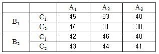
- 52.08
- 54.17
- 56.25
- 123.17
(정답률: 73%)
8. 반복이 없는 22요인실험법에 관한 설명으로 옳지 않은 것은?
- A의 주효과는 1/2[ab+a-b-(1)이다.
- B의 주효과는 1/2[b+(1)-ab-a]이다.
- 교호작용효과 AB는 1/2[ab+(1)-b-a]이다.
- A, B, 교호작용 A×B의 자유도는 모두 1이다.
(정답률: 69%)
9. 인자 A가 모수인자이고 반복이 일정하지 않은 1원 배치실험을 다음과 같이 실시하였다. E(VA)의 값으로 가장 적절한 것은? (단, ai는 인자 A의 주효과, mi는 수준 i에서의 반복수이다.)
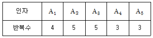
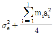
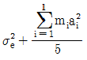
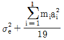
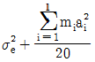
(정답률: 52%)
10. 동일한 기계에서 생산되는 제품을 5개 추출하여 그 중요 특성치를 측정하였더니 데이터와 같았다. 이 특성치가 망소특성인 경우에 SN(Signal Noise)비는 약 얼마인가?
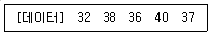
- 31.29 db
- －31.29 db
- 21.29 db
- －21.29 db
(정답률: 66%)
11. 다음 분산분석표는 랜덤으로 5배치(Batch)를 택하고 각 3회씩 수율을 측정한 결과이다. 배치의 분산성분
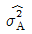
을 추정하면 약 얼마인가?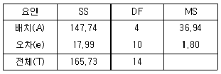
- 1.80
- 7.03
- 11.71
- 35.14
(정답률: 53%)
12. 단일인자의 3수준에서의 각 수확량을 A1, A2, A3와 같이 표시하여 다음과 같은 1차 선형식 L을 만들었다. 이 선형식에 관한 설명으로 가장 적절한 것은? (단, Ci가 모두 0인 것은 아니다.)
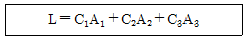
- Ci중에 0 인 것은 있어서는 안 된다.
- C1+C2+C3=0일 때 L을 대비(Contrast)라고 한다.
- C1+C2+C3=1일 때 L을 대비(Contrast)라고 한다.
- Ci의 값에 관계없이 L을 대비(Contrast)라고 한다.
(정답률: 77%)
13. 2원 배치실험에서 인자 A를 4수준, 인자 B를 5수준으로 하여 20회의 실험을 랜덤으로 실시하였다. 다음의 분산분석표 데이터를 사용하여 오차의 순변동은 구하면 약 얼마인가?
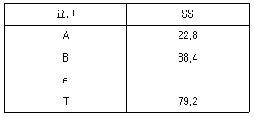
- 23.5
- 24.5
- 27.5
- 28.5
(정답률: 52%)
14. 직선회귀모형 yi=β0+β1xi+ei에서
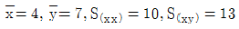
이라면,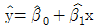
는?- y=-1.4+0.8x
- y=3.9+0.8x
- y=-5.1+1.3x
- y=1.8+1.3x
(정답률: 75%)
15. 인자와 인자수준의 선택에 관한 설명으로 가장 잘못된 것은?
- 온도, 압력, 습도는 계량인자이다.
- 수준수는 보통 2~5 수준이 적절하다.
- 현재 사용되고 있는 인자의 수준은 포함시키는 것이 좋다.
- 실제로 적용이 불가능한 인자의 수준도 흥미영역에 포함되어야 한다.
(정답률: 74%)
16. 모수인자 A, B의 수준수가 각각 ℓ, m이고, 반복수가 r회인 2원 배치실험에서 요인 B의 평균제곱의 기댓값은?
- σ2e+ℓmσ2B
- σ2e+ℓrσ2B
- σ2e+mrσ2B
- σ2e+ℓmrσ2B
(정답률: 70%)
17. L9(34)형 직교배열표에 대한 설명으로 가장 거리가 먼 것은?
- 실험횟수는 9이다.
- 열의 수는 (실험횟수－1)이다.
- 기본 표시에는 a, b, ab, ab2으로 나누어진다.
- 직교배열표에서 숫자 0, 1, 2는 각각 수준을 나타낸다.
(정답률: 53%)
18. 23형 계획에서 교호작용 ABC를 블록과 교락시킨 후 abc가 포함된 블록으로 1/2블록 일부실시법을 행하였을 때. 교호작용 BC와 별명(Alias)관계에 있는 주인자의 주효과를 바르게 표현한 것은?
- 1/2[a+abc)-(b+c)]
- 1/2[b+abc)-(a+c)]
- 1/2[c+abc)-(a+c)]
- 1/2[abc+1)-(bc+b)]
(정답률: 65%)
19. 23요인 배치실험을 교락법을 사용하여 다음과 같이 2개의 블록으로 나누어 실험하려고 한다. 블록과 교락되어 있는 교호작용은?
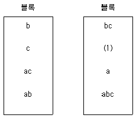
- A×B
- A×C
- B×C
- A×B×C
(정답률: 71%)
20. 4대의 기계 프레스 가공을 행하여 100개씩의 제품을 만들어 시험한 데이터가 표과 같다. 기계간 변동(SA)은 약 얼마인가?
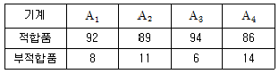
- 0.37
- 0.57
- 30.01
- 33.01
(정답률: 66%)
2과목: 통계적품질관리
21. A 생산공정은 품질관리를 위해 2σ법에 의한 부적합품률 관리도를 이용하고 있다. 이 관리도의 CL이 2%라면 UCL은 약 얼마인가? (단, 샘플의 크기는 100개이다.)
- 0.048
- 0.062
- 4.2
- 6.2
(정답률: 49%)
22. 규격한계와 관리한계에 관한 설명으로 가장 적절한 것은?
- 규격한계는 공정관리능력 범위를 지시하기 위한 것이며, 관리한계는 규격에의 적합 여부를 판정하기 위한 수단으로 사용한다.
- 규격한계는 규격에의 적합 여부를 판정하기 위한 수단으로 사용하며, 관리한계는 우연원인을 제거하려는 목적에서 공정에 대한 조처를 지시하는 수단으로 사용한다.
- 규격한계는 이상원인을 제거하려는 목적에서 공정에 대한 조처를 지시하는 수단으로 사용하며, 관리한계는 이미 만들어진 제품의 적합ㆍ부적합품을 판정하기 위한 것이다.
- 규격한계는 이미 만들어진 제품의 적합ㆍ부적합품을 판정하기 위한 것이며, 관리한계는 이상원인을 제거하려는 목적에서 공정에 대한 조처를 지시하는 수단으로 사용한다.
(정답률: 58%)
23. 검사특성곡선에 관한 설명으로 가장 적절한 것은?
- 1회 샘플링검사 방식에만 적용할 수 있다.
- 계량형 샘플링검사 방식에는 적용할 수 없다.
- 부적합품률이 커짐에 따라 로트의 합격확률은 낮아진다.
- 로트의 합격확률과 로트의 크기를 각각의 축으로 나타낸 그래프이다.
(정답률: 64%)
24. 금속판 두께의 하한규격치가 2.5mm이다. 두께가 2.5mm 미만인 것이 1% 이하인 로트는 통과시키고, 두께가 2.5mm 미만인 것이 8% 이상인 로트는 불합격시키는 계량 규준형 1회 샘플링 검사방식을 설계하고자 한다. 부적합품률이 1% 미만인 로트가 잘못되어 불합격 처분을 받게 될 가능성을 5% 이하로 하고, 로트의 부적합품률이 무려 8% 이상 되는 것이 운좋게 합격 판정 받을 가능성을 10% 이하로 하고 싶다. 다음 중 옳지 않은 것은?
- 생산자 위험은 5%이다.
- 소비자 위험은 8%이다.
- 합격품질수준은 1%이다.
- 로트의 부적합률을 보증하는 방식이다.
(정답률: 63%)
25. 어떤 기계에 대하여 1개월간 고장에 의한 정지횟수를 조사하였더니 표와 같았다. 고장건수가 변하였다고 할 수 있는지를 ?2검정으로 확인하고자 한다. 이때 검정통계량은 약 얼마인가?
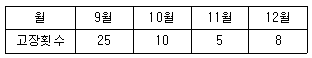
- 17.57
- 19.83
- 21.35
- 24.17
(정답률: 53%)
26. H 유리공장의 A, B 2개 생산라인 중 A공정에서는 10m3당 기포의 수가 45개, B공정에서는 10m3당 기포의 수가 56개 있었다. A, B공정의 기포수의 차를 검정하기 위한 검정 통계량 (ㅕ0)의 값은 약 얼마인가?
- －1.964
- －1.095
- －0.997
- －0.498
(정답률: 57%)
27. 유의수준에 관한 설명으로 옳은 것은?
- 제1종 과오를 범할 확률의 최소값이다.
- 제2종 과오를 범할 확률의 최소값이다.
- 제1종 과오를 범할 확률의 최대허용한계이다.
- 제2종 과오를 범할 확률의 최대허용한계이다.
(정답률: 72%)
28. 모집단으로부터 4개의 시료를 각각 뽑은 결과의 분포가 X1~N(5, 82), X2~N(25, 42)이고, Y=3X1-2X2일 때 의 분포는 어떻게 되겠는가? (단, X1, X2는 서로 독립이다.)
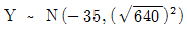
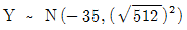
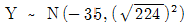
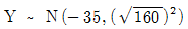
(정답률: 67%)
29. 공정변화가 조금씩 변화되는 것을 효율적으로 탐지할 수 있는 관리도로 가장 적합한 것은?
- L-S 관리도
- Me-R 관리도
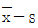
관리도- 누적합관리도
(정답률: 64%)
30. 특성변화에 주기성이 있어 그 주기성을 피하기 위하여 고안한 샘플링 방법을 무엇이라하는가?
- 계통샘플링
- 네이만샘플링
- 층별샘플링
- 지그재그샘플링
(정답률: 78%)
31.
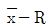
관리도에서 의 산포를
의 산포를 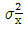
, 군간산포를 σ2b, 군내산포를 σ2ω로 표현할 때 다음 중 옳지 않은 것은? (단, k는 군의 수, n은 군의 크기이다.)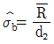
(단, d2는 군의 크기가 n일 때의 값)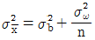
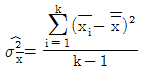
- 완전한 관리상태일 때 σ2b=0
(정답률: 62%)
32. 계수값 검사를 위한 축차 샘플링 검사방식에 관한 규격은?
- KS Q ISO 8422：2009
- KS Q ISO 8423：2009
- KS Q ISO 2859－2：2010
- KS Q ISO 2859－3：2010
(정답률: 56%)
33. 중심경향에 관한 설명으로 옳지 않은 것은?
- 명목척도와 서열척도로 측정된 변수는 평균을 계산할 수 있다.
- 중심적 경향값으로 사용되는 통계량은 최빈값, 중앙값, 산술평균 등이 있다.
- 하나의 변수에 관한 자료의 중심적 경향분석은 자료의 분포를 대표하는 단일수치를 찾아내는 것이다.
- 자료가 어떤 값을 중심으로 분포하고 있는가를 파악하려는 것으로서, 자료 분포의 중심이 되는 그 값을 중심적 경향값이라 한다.
(정답률: 59%)
34. 계수치 샘플링 검사 절차－제1부：로트별 합격품질한계(AQL)지표형 샘플링 검사방안(KS Q ISO 2859－1：2010)에서 AQL은 0.4%(부적합품 %), 샘플문자 G일 때 n=32, Ac=0, Re=1이라면 AQL의 로트가 합격할 확률은 약 얼마인가?
- 68.4%
- 87.2%
- 91.3%
- 95.2%
(정답률: 52%)
35. 어떤 제조공정에서 9개의 시료를 뽑아 제품치수에 대한 측정치를 정리하였더니 시료평균이 50.35mm, 시료표준편차가 0.3mm이었다. 이 공정에서 생산되는 제품치수의 모평균 신뢰구간을 95% 신뢰도로 구하면 약 얼마인가? (단, t0.975(8)=2.306, t0.975(9)=2.262이다.)
- 20.124≤μ≤50.771
- 47.770≤μ≤52.930
- 50.119≤μ≤50.581
- 49.621≤μ≤51.079
(정답률: 57%)
36. 크기 5의 시료를 25조 측정하여 각 군마다 표준편차(s)를 구해 그 평균(을 계산하였더니 1.08 이었다. s관리도의 관리상한은 약 얼마인가? (단, n=5일 때 d2=2.326, d3=0.864, c4=0.9400, c5=0.3412이다.)
- 2.26
- 2.38
- 2.45
- 2.49
(정답률: 34%)
37. 관리도에 관한 설명으로 옳지 않은 것은?
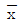
관리도의 검출력은 x관리도보다 좋다.- 관리한계선을 2σ한계로 좁히면 제2종 과오가 증가한다.
- P 관리도에서 조마다 시료수가 다르면 관리한계선은 계단식이 된다.
- nP 관리도는 각 군의 시료의 크기가 반드시 일정해야 한다.
(정답률: 76%)
38. A 자동차는 신차 구입 후 5년 이상 자동차를 보유하는 고객의 비율을 추정하기를 원한다. 신뢰구간 95%에서 오차한계가 ±0.⑤가 되도록 하기 위해서 필요한 최소의 표본크기는?
- 373
- 380
- 382
- 385
(정답률: 56%)
39. 상관분석에서 상관의 정도를 나타내는 척도로서 공분산을 사용할 수 없는 이유로 가장 적절한 것은?
- 과거로부터의 습관에 의하여
- 상관계수를 구하는 편이 더 간단하므로
- 공분산의 값은 그 성격상 절대치 값만을 알 수 있으므로
- 공분산은 원 데이터의 측정단위 변환에 따라 값이 달라지므로
(정답률: 79%)
40. 전수검사에 비하여 샘플링검사의 장점으로 적합하지 않은 것은?
- 검사량이 적기 때문에 경제적이다.
- 세심한 검사가 이루어질 가능성이 높다.
- 적은 수의 검사인원으로 검사가 가능하다.
- 개개의 물품에 대한 측정실수의 기회가 높다.
(정답률: 60%)
3과목: 생산시스템
41. PERT/CPM 도입에 따른 장점이 아닌 것은?
- 효율적인 진도관리가 가능
- 문제점 예견과 사전조치가 가능
- 작업에 대한 자율성의 보장이 가능
- 최저비용으로 공기(工期) 단축이 가능
(정답률: 59%)
42. 정체, 저장, 대기, Material Handling 등의 사항이 생산현장의 어느 위치에서 발생하는지 한눈에 알아볼 수 있도록 표시된 도표는?
- 유통선도(Flow Diagram)
- 흐름공정도표(Flow Process Chart)
- 작업공정도표(Operation Process Chart)
- 제품구성도표(Product Structure Diagram)
(정답률: 54%)
43. 작업자가 마음만 먹으면 피할 수 있는 지연으로서 작업자의 컨트롤 하에서 부주의나 태만때문에 지연이 발생하는 경우의 서어블릭 기호는?
- R
- P
- AD
- UD
(정답률: 69%)
44. 도요타 생산방식(TPS)의 기본사상은 낭비의 제거에 있다. 다음 중 7가지 낭비의 유형이 아닌 것은?
- 재고의 낭비
- 원재료의 낭비
- 가공의 낭비
- 과잉생산의 낭비
(정답률: 63%)
45. 보기에서 설명하고 있는 수요예측기법은?
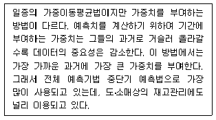
- 지수평활법
- 박스젠킨스 모형
- 역사자료 유추법
- 라이프사이클 유추법
(정답률: 86%)
46. 1회당 발주비용이 20,000원, 1년간 1개 보관하는 경우의 재고유지비용이 1,000원, 연간수요량이 15,000개라면 경제적 발주량은 약 몇 개인가?
- 712개
- 725개
- 754개
- 775개
(정답률: 66%)
47. 대형 선박이나 토목건축 공사장에 적용하는 배치방법으로 작업 진행 중인 제품이 한 작업장에서 다른 작업장으로 이동하지 않고 작업자, 자재 및 설비가 이동하는 배치법은?
- 제품별 배치
- 공정별 배치
- 혼합형 배치
- 위치고정형 배치
(정답률: 85%)
48. 총괄생산계획(APP)의 전략 중 가동률, 즉 생산성을 수요의 변동에 대응시키는 전략에서 고려되는 비용은?
- 잔업수당
- 재고 유지비
- 해고비용, 퇴직수당
- 납기지연으로 인한 손실
(정답률: 71%)
49. 시스템(System)의 개념과 관련되는 주요 내용들은 시스템의 특성 내지 속성으로 나타낸다. 다음 중 시스템의 기본속성이 아닌 것은?
- 기능성
- 환경적응성
- 관련성
- 목적추구성
(정답률: 63%)
50. PTS(Predetermined Time Standard System)의 특징으로 옳지 않은 것은?
- 작업방법과 작업시간을 분리하여 동시에 연구할 수 있다.
- 작업방법만 알고 있으면 관측을 행하지 않고도 표준시간을 알 수 있다.
- 작업자의 능력이나 노력에 관계없이 객관적으로 시간을 결정할 수 있다.
- 작업자의 인종ㆍ성별ㆍ연령 등을 고려하여야 하며, 작업측정시 스톱워치 등과 같은 기구가 필요하다.
(정답률: 60%)
51. 가중이동평균법에서 최근 자료에 높은 가중치를 부여하는 가장 큰 이유는?
- 매개변수 파악을 위하여
- 시간적 간격을 좁히기 위하여
- 재고의 정확성을 높이기 위하여
- 수요변화에 신속 대응하기 위하여
(정답률: 76%)
52. 그림과 같은 자재명세서(BOM)를 갖는 X 제품을 200단위 생산하기 위하여 필요한 구성품 D, E의 수는 각각 몇 개 인가 ?(단, 괄호 안의 숫자는 각 구성품의 소요량이다.)
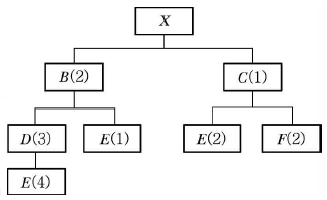
- D：600개, E：1,200개
- D：600개, E：2,400개
- D：1,200개, E：2,800개
- D：1,200개, E：5,600개
(정답률: 63%)
53. 작업분석에 대한 개념의 구분이 큰 것부터 순서대로 나열한 것으로 옳은 것은?
- 공정분석 － 단위작업분석 － 요소작업분석 － 동작분석
- 공정분석 － 요소작업분석 － 단위작업분석 － 동작분석
- 공정분석 － 동작분석 － 요소작업분석 － 단위작업분석
- 공정분석 － 단위작업분석 － 동작분석 － 요소작업분석
(정답률: 70%)
54. 워크샘플링에서 상대오차를 S, 관측항목의 발생비율을 P, 관측횟수를 N이라고 하면 절대오차는 어떻게 표현되는가?
- SP
- SN
- PN
- S2P
(정답률: 67%)
55. 4가지 주문작업을 1대의 기계에서 처리하고자 한다. 최소납기일 규칙에 의해 작업순서를 결정할 경우 최대납기지연 시간은 얼마가 되는가? (단, 오늘은 4월 1일 아침이다.)
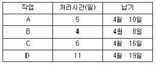
- 5일
- 6일
- 7일
- 8일
(정답률: 72%)
56. 라인밸런스 효율에 관한 내용으로 가장 거리가 먼 것은?
- 각 작업장의 표준작업시간이 균형을 이루는 정도를 말한다.
- 사이클타임을 길게 하면 생산속도가 빨라져 생산율이 높아진다.
- 사이클타임과 작업장의 수를 얼마로 하느냐에 따라서 결정된다.
- 생산작업에 투입되는 총시간에 대한 실제작업시간의 비율로 표현된다.
(정답률: 86%)
57. 시간연구를 통하여 표준시간을 결정하는 절차로 옳은 것은?
- 요소작업 분할 → 작업수행도 평가 → 대상작업자 선정 → 여유율 결정 → 표준시간 결정
- 요소작업 분할 → 대상작업자 선정 → 작업수행도 평가 → 여유율 결정 → 표준시간 결정
- 대상작업자 선정 → 요소작업 분할 → 작업수행도 평가 → 여유율 결정 → 표준시간 결정
- 대상작업자 선정 → 작업수행도 평가 → 여유율 결정 → 요소작업 분할 → 표준시간 결정
(정답률: 46%)
58. 자재계획 수립시 고려하여야 할 사항이 아닌 것은 ?
- 외주시 외주처에서 자재를 직접 구매 조달하는 경우에도 소재계획을 꼭 세워야 한다.
- 자재계획은 설계도에 의한 소요자재를 결정하고, 설계도 변경 시에는 당연히 재료를 변경해야 한다.
- 소요량 계획은 작업착수시기에 맞춰 납기를 정하고 조달기간을 고려하여 발주시기를 정하여야 한다.
- 자재소요량과 발주량은 반드시 일치할 필요는 없지만, 상비품이나 장기사용품목은 장기 견적 구매방식을 병행하는 것이 좋다.
(정답률: 72%)
59. 설비보전 방법 중 일정기간마다 예방보전을 행하는 것은?
- 사후보전
- 정기보전
- 예지보전
- 수리보전
(정답률: 82%)
60. 플랜트 공장에서 1개월(30일) 중 27일을 가동하였다. 1일 작업시간은 24시간이고, 기준생산량은 1일 1,000톤이다. 1개월간 실제생산량은 24,000톤이고, 실제 생산량 중 150톤은 부적합품이었다면 시간가동률은 얼마인가?
- 90%
- 93%
- 95%
- 97%
(정답률: 56%)
4과목: 신뢰성관리
61. 신뢰도 함수 R(t)가 고장률 인 지수분포를 따르고 보전도 함수 M(t)=1-e-μt일 때 가용도(Availability)는?
- λ/λ+μ
- μ/λ+μ
- λμ/λ+μ
- λ+μ/λμ
(정답률: 83%)
62. 용어－신인성 및 서비스 품질(KS A 3004：2002)에서 정의한 용어 중 시험 또는 운용 결과를 해석하거나 신뢰성 척도를 계산하는 데 포함되어야 하는 고장을 무엇이라 하는가?
- 오용(Misuse) 고장
- 돌발(Sudden) 고장
- 연관(Relevant) 고장
- 파국(Cataleptic) 고장
(정답률: 71%)
63. 수리하여 가면서 사용하는 시스템, 기기, 부품 등이 규정된 조건에서 보전이 될 때 규정된 시간 내에 보전이 완료 되는 성질을 무엇이라 하는가?
- 보전성
- 보전도
- 신뢰도
- 가동률
(정답률: 74%)
64. 신뢰성 설계의 순서를 보기에서 골라 바르게 배열한 것은?
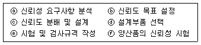
- ⓐ － ⓑ － ⓒ － ⓓ － ⓔ － ⓕ
- ⓐ － ⓑ － ⓔ － ⓓ － ⓒ － ⓕ
- ⓑ － ⓐ － ⓓ － ⓒ － ⓔ － ⓕ
- ⓑ － ⓔ － ⓐ － ⓒ － ⓓ － ⓕ
(정답률: 67%)
65. 각각의 고장률이 λ1,λ2,…,λn으로 일정한 구성요소로 구성된 직렬계 시스템의 고장률은?
- λ1×λ2×…λn
- λ1+λ2+…λn
- 1/λ1×λ2×…λn
- 1/λ1+λ2+…λn
(정답률: 80%)
66. 와이블 분석의 결과 형상모수(Shape Parameter)의 값이 1로 추정되었다. 다음 중 가장 적절한 설명은?
- 고장률이 욕조형이다.
- 고장률이 감소하는 DFR이다.
- 고장률이 일정한 CFR이다.
- 고장률이 증가하는 IFR이다.
(정답률: 80%)
67. 지수분포를 따르는 부품 n개를 수명시험하여 고장난 것을 교체해 가면서 시험하다가 r번째 고장이 발생했을 때 시험을 중단하였다. 이때 고장률을 추정하는 식으로 옳은 것은? (단, tr은 r번째 고장발생시간이며, ti는 i번째 고장발생시간이다.)
- n/rtr
- r/∑ti+(n-r)tr
- r/ntr
- n/∑ti+(n-r)tr
(정답률: 69%)
68. 제품의 신뢰성을 증대시키는 방법의 기본이 아닌 것은?
- 제품의 고장률 감소
- 제품의 안전성 제고
- 제품의 연속작동시간의 증가
- 병렬 및 대기 리던던시의 활용
(정답률: 70%)
69. m/n계 리던던시에 관한 설명으로 가장 적절한 것은?
- m=n일 때 병렬 리던던시가 된다.
- n－m 개의 병렬 리던던시를 말한다.
- m=1일 때에는 병렬 리던던시가 된다.
- m=2일 때에는 병렬 리던던시가 된다.
(정답률: 53%)
70. TV 브라운관에 대한 수명시험을 한 결과 형상모수(m)는 0.67, 척도모수(η)는 8.94인 와이블 분포를 따를 때 이 브라운관의 평균수명은 약 얼마인가? (단,
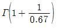
이다.)- 8.94
- 11.80
- 12.62
- 13.26
(정답률: 47%)
71. 부하의 평균(μx)은 1, 표준편차(σx)는 0.4이고, 재료강도의 표준편차(σy는 0.4이다. μx와 μy로부터의 거리가 각각 nx=ny=2이며 안전계수(m)를 2로 하고 싶은 경우 재료의 평균 강도(μy)는 얼마이어야 하는가?
- 1.2
- 1.5
- 2.8
- 4.4
(정답률: 62%)
72. 중앙값순위(Median Rank)표에서 샘플수(n)가 10개, 고장순번(i)이 1일 때, 첫 번째 고장발생시간에서 불신뢰도가
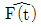
는 약 얼마인가?- 0.013
- 0.067
- 0.074
- 0.083
(정답률: 73%)
73. 샘플 100개에 대하여 수명시험을 하고 10시간 간격으로 고장개수를 조사하였더니 20시간에서 누적고장수 10개, 30시간에서의 누적고장수 20개, 40시간에서의 누적고장수는 50개로 나타났다. 시점 t=30시간에서의 고장확률밀도함수는 약 얼마인가?
- 0.03/시간
- 0.0375/시간
- 0.3/시간
- 0.375/시간
(정답률: 47%)
74. 신뢰성 샘플링 검사에서 MTBF와 같은 수명 데이터를 기초로 로트의 합부판정을 결정하는 것은?
- 계수형 샘플링검사
- 계량형 샘플링검사
- 조정형 샘플링검사
- 선별형 샘플링검사
(정답률: 72%)
75. Y 기기에 미치는 충격(Shock)은 발생률 0.0003/hr인 HPP(Homogeneous Poisson Process)를 따라 발생한다. 이 기기는 1번의 충격을 받으면 0.4의 확률로 고장이 발생한다. 5,000시간에서의 신뢰도는 약 얼마인가?
- 0.223
- 0.549
- 0.558
- 0.623
(정답률: 60%)
76. 기계를 60시간 동안 연속 사용하는 과정에서 8회의 고장이 발생하였고, 각각의 고장에 대한 수리시간이 데이터와 같았다면 MTBF는 몇 시간인가?
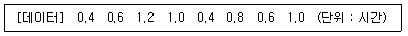
- 6
- 6.5
- 6.75
- 7
(정답률: 60%)
77. 고장률이0.001/시간으로 일정한 장치를 100시간 사용하면 신뢰도는 0.9가 된다. 이 장치 2 개를 병렬결합 모델로 결합하여 시스템을 만들었다면 이 장치 1개를 사용한 시스템과 비교하면 평균수명은 몇 배로 되는가?
- 0.5
- 1.0
- 1.5
- 2.0
(정답률: 55%)
78. 다음 중 시험시간을 단축시킬 목적으로 실제의 사용조건보다 강화된 사용조건에서 실시하는 신뢰성시험은?
- 현지시험
- 정상수명시험
- 환경시험
- 가속수명시험
(정답률: 90%)
79. FMEA의 RPN(Risk Priority Number)평가에서 중요도(Severity)는 어느 항목에 대하여 평가하는 것인가?
- 고장모드
- 고장영향
- 고장원인/매커니즘
- 대책
(정답률: 54%)
80. 다음 시스템의 고장목(Fault Tree)을 신뢰성 블록도로 가장 적절하게 표현한 것은?
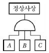
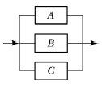
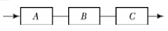
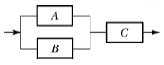
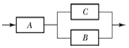
(정답률: 79%)
5과목: 품질경영
81. 규격하한(SL)이 3.0 이고 와 의 추정치가 각각 3.2, 0.1인 경우에 공정능력지수(CPL)는 약 얼마인가? (단, 규격은 한쪽 규격이다.)
- 0.67
- 1.00
- 1.33
- 1.50
(정답률: 57%)
82. 규격의 역할에 관한 설명으로 가장 적절한 것은?
- 제조자와 구매자 사이의 신뢰에 대한 역할이 적다.
- 제조자와 구매자 사이에 전달수단을 제공하는 것이다.
- 규정된 기준치와 한계치와의 차이로 공정능력을 나타낸다.
- 주로 전문가의 의견을 활용하면 활용할수록 규격의 범위를 보다 넓게 하여 적용할 수 있다.
(정답률: 46%)
83. 품질경영시스템은 시간의 흐름과 기술의 발전에 따라 진화해 왔다. 진화순서를 바르게 나열한 것은?
- 교정위주 시스템 － 비용위주 시스템 － 고객위주 시스템
- 비용위주 시스템 － 교정위주 시스템 － 고객위주 시스템
- 비용위주 시스템 － 고객위주 시스템 － 교정위주 시스템
- 교정위주 시스템 － 고객위주 시스템 － 비용위주 시스템
(정답률: 66%)
84. 측정기의 관리규정에 들어가는 사항에 해당되지 않는 것은?
- 청소한 날짜
- 측정기의 보관, 출납
- 정기점검의 시기
- 측정기대장의 정리요령
(정답률: 72%)
85. 표준에 관련된 용어의 설명으로 옳지 않은 것은?
- “성문표준”이란 국가사회의 모든 분야에서 총체적인 이해성, 효율성 및 경제성 등을 높이기 위하여 강제 또는 자율적으로 적용하는 문서화된 과학기술적 기준, 규격, 지침 및 기술규정을 말한다.
- “산업표준”이란 광공업품의 종류, 형상, 품질, 생산방법, 시험ㆍ검사ㆍ측정방법 및 산업활동과 관련된 서비스의 제공방법ㆍ절차 등을 통일하고, 단순화하기 위한 기준을 말한다.
- “법정계량단위”란 정확성과 공정성을 확보하기 위하여 정부가 법령에 따라 정하는 상거래 및 증명용 단위를 말한다.
- “교정”이란 연구개발, 산업생산, 시험검사 현장 등에서 측정한 결과가 명시된 불확정 정도의 범위 내에서 국가 측정표준 또는 국제측정표준과 일치되도록 연속적으로 비교하는 체계를 말한다.
(정답률: 71%)
86. 사내표준화의 대상이 아닌 것은?
- 방법
- 특허
- 재료
- 기계
(정답률: 82%)
87. 파레토도를 사용하여 고객 클레임의 주요 항목이 무엇인가를 찾아내었다. 고객만족을 위해 전체적인 클레임 수를 줄이려고 할 때, 다음 중 어떤 기법을 사용하는 것이 그 원인을 찾는 데 가장 효율적인가?
- 히스토그램
- 체크시트
- 특성요인도
- 관리도
(정답률: 72%)
88. 품질계획에서 많이 활용되는 품질기능전개(QFD)에서의 품질하우스 작성시 무엇(What)과 어떻게(How)의 관계를 나타낼 때 사용하는 기법은?
- PDPC법
- 연관도법
- 친화도법
- 매트릭스도법
(정답률: 65%)
89. 품질보증 시스템의 구성요소에 해당하지 않는 것은?
- 품질평가시스템
- 품질경영시스템
- 품질정보시스템
- 품질보증업무시스템
(정답률: 63%)
90. 허츠버그(Frederick Hertzberg)가 주장한 2요인 이론 중 직무만족에 영향을 주는 요인인 동기요인에 해당되지 않는 것은?
- 인정
- 급여
- 성취감
- 성장가능성
(정답률: 78%)
91. 다음 중 품질관리위원회의 심의사항이 아닌 것은?
- 각 부문의 트러블 조정
- 공정의 이상원인의 추구
- 품질표준 및 목표의 심의
- 품질관리 추진계획의 결정
(정답률: 58%)
92. 다음 중 현상타파를 위한 품질목표와 가장 거리가 먼 것은?
- 품질코스트를 5%로 줄인다.
- 재작업률 0(Zero)에 도전한다.
- 제품의 로스율을 1%로 줄인다.
- 부적합품률을 현재의 0.5% 수준으로 유지한다.
(정답률: 66%)
93. 다음은 제조물책임법의 목적에 관한 내용이다. ( ) 안에 들어갈 용어로 옳은 것은?
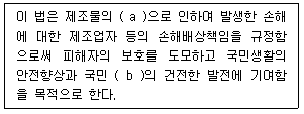
- a：파손, b：복지
- a：결함, b：복지
- a：파손, b：경제
- a：결함, b：경제
(정답률: 46%)
94. 산업표준화 유형 중 기능에 따른 분류가 아닌 것은?
- 품질규격
- 제품규격
- 방법규격
- 전달규격
(정답률: 56%)
95. 품질관리의 4대 기능 중 공정의 관리(실행기능)단계에서 수행하는 업무와 가장 거리가 먼 것은?
- 사내규격이 체계화되어 품질에 대한 정책이 일관되도록 하는 업무
- 설비, 기계의 능력이 품질실현의 요구에 적합하도록 보전하는 업무
- 검사, 시험방법, 판정의 기준이 명확하며, 판정의 결과가 올바르게 처리되도록 하는 업무
- 원재료가 회사규격에 정해진 품질대로 확실히 수입되어 적시에 적량이 제조현장에 납품하는 업무
(정답률: 53%)
96. 커크패트릭(Kirkpatrick)이 제안한 품질비용 모형에서 예방코스트의 증가에 따른 평가코스트와 실패코스트의 변화를 설명한 내용으로 가장 적절한 것은?
- 평가코스트 증가, 실패코스트 증가
- 평가코스트 증가, 실패코스트 감소
- 평가코스트 감소, 실패코스트 증가
- 평가코스트 감소, 실패코스트 감소
(정답률: 67%)
97. 품질경영시스템에서 사용되는 문서의 형태에 관한 설명과 용어의 연결이 옳지 않은 것은?
- 요구 사항을 명시한 문서 － 시방서
- 권고 또는 제안을 명시한 문서 － 지침
- 수행된 활동 또는 달성된 결과에 대한 객관적 증거를 제공하는 문서 － 기록
- 활동과 프로세스를 일관되게 수행하기 위한 방법에 대한 정보를 제공하는 문서－품질계획서
(정답률: 65%)
98. 모토롤라에서 시작된 6시그마 활동에 관한 설명으로 가장 거리가 먼 것은?
- 공정능력지수 PCI(Cp=2.0)을 목표로 하는 활동이다.
- 6시그마란 목표치에서 주어진 상ㆍ하한 규격한계까지의 σ여유폭을 의미한다.
- 공정품질 특성치의 평균값이 목표치에 위치하고 있다고 가정할 때 부적합품률 3.4ppm을 목표로 한다.
- 6시그마 활동은 품질우연변동요인을 고려하여 치우침을 고려한 공정능력지수 PCI(Cpk는 Cpk≥1.5를 실현하려는 노력이다.
(정답률: 66%)
99. 다음 중 게하니(Ray Gehani)교수가 구상한 품질가치사슬에서 TQM의 전략목표인 고객만족 품질을 얻기 위하여 융합되어야 할 3가지 품질에 해당되지 않는 것은?
- 검사품질
- 제품품질
- 경영종합품질
- 전략종합품질
(정답률: 53%)
100. 국가규격‘표준서의 서식 및 작성방법(KS A 0001：2008)’에서 요구사항의 기술이 “허용”인 경우에 문장 말미에 쓰는 표현으로 옳은 것은?(오류 신고가 접수된 문제입니다. 반드시 정답과 해설을 확인하시기 바랍니다.)
- ~할 수 있다.
- ~할 필요가 없다.
- ~하여서는 안 된다.
- ~하지 않는 것이 좋다.
(정답률: 46%)